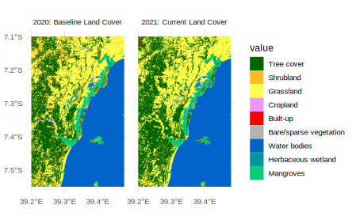

Land Cover Change in Mkuranga District
spatial-analysis
land-cover
Analyzing and comparing temporal land cover patterns in Mkuranga District for marine spatial planning
Keywords
Mkuranga, Pwani, land cover change, ESA WorldCover, coastal analysis, spatial patterns
Understanding Spatial Patterns in Land Cover
Spatial patterns in land cover are the local arrangements and configurations of different land use types across a landscape. Rather than simply knowing what proportion of an area is forest or cropland, understanding the pattern of these land covers reveals much more about ecosystem function and human land use practices. For example, fragmented forests interspersed with agriculture indicate different management histories and conservation challenges than consolidated forest blocks.
Spatial signatures provide a quantitative framework for capturing these patterns. They encode information about how land cover types are spatially organized—whether they form large contiguous patches, are highly fragmented, or follow specific spatial arrangements. In this post, I’ll demonstrate how to analyze and track temporal changes in land cover patterns across Mkuranga District and use visual analysis to identify drivers of landscape transformation in this critical coastal region.
Loading and Preparing the Data
Working with spatial raster data requires careful data loading and preprocessing to ensure consistent and accurate analysis. We begin by loading specialized R packages designed for spatial analysis: terra for raster operations, sf for vector geometries, and tidyterra to bridge spatial data with tidyverse workflows. These packages provide efficient tools for reading, manipulating, and visualizing large spatial datasets.
Code
library(sf)
library(terra)
library(tidyterra)
library(tidyverse)
require(tidyplots)
# library(webr)
require(patchwork)
require(gt)
require(echarts4r)We source ESA WorldCover 10m resolution land cover data for Mkuranga District, located on mainland Tanzania’s Pwani Region. This district encompasses critical coastal ecosystems where terrestrial and marine habitats interface. Converting these rasters to factors (categorical data) is essential—it tells R that the numeric values represent discrete land cover categories rather than continuous measurements, which enables proper labeling and visualization.
Code
lulc_2020 <- greenSD::get_esa_wc(
bbox = mkoani_bbox,
year = 2021,
# place = 'Dar es Salaam, Tanzania',
datatype = "landcover"
)
lulc_2020 |>
terra::writeRaster(
filename = 'data/mkuranga_lulc_2021.tif',
overwrite=TRUE,
datatype='INT1U'
)Load the raster data for Mkuranga District:
Code
#posts/lulc_change/
mkuranga_lc20 = terra::rast('mkuranga_lulc_2020.tif') |>
terra::crop(terra::ext(39.2, 39.48, -7.55, -7.1), mask = TRUE) |>
as.factor()
mkuranga_lc21 = terra::rast('mkuranga_lulc_2021.tif') |>
terra::crop(terra::ext(39.2, 39.48, -7.55, -7.1), mask = TRUE) |>
as.factor()Creating a Standardized Color Scheme
Consistent color representation across all visualizations is crucial for effective communication and reproducibility in scientific analyses. We create a reference dataframe (worldcover_df) that maps each ESA WorldCover land cover category to a standardized hex color code based on official ESA specifications. This single reference ensures that forest always appears as dark green (#006400), water as blue (#0064c8), and so forth across all figures.
Code
# Based on official ESA WorldCover specifications
worldcover_df = data.frame(
value = c(10, 20, 30, 40, 50, 60, 70, 80, 90, 95, 100),
label = c("Tree cover", "Shrubland", "Grassland", "Cropland",
"Built-up", "Bare/sparse vegetation", "Snow and ice",
"Water bodies", "Herbaceous wetland",
"Mangroves", "Moss and lichen"),
color = c("#006400", "#ffbb22", "#ffff4c", "#f096ff", "#fa0000",
"#b4b4b4", "#f0f0f0", "#0064c8", "#0096a0", "#00cf75", "#fae6a0")
)Beyond colors, we embed this metadata directly into our raster objects using the levels() and coltab() functions. This embeds both the categorical labels and color palette into the raster structure itself, making the visualizations self-contained and reproducible. Any downstream analysis or visualization automatically uses these definitions, eliminating inconsistencies and the need to repeatedly specify colors and labels.
Code
# Set levels with labels
levels(mkuranga_lc20) = worldcover_df |> select(value, label)
# Embed color palette into rasters
coltab(mkuranga_lc20) = worldcover_df |> select(value, color)
# Set levels with labels
levels(mkuranga_lc21) = worldcover_df |> select(value, label)
# Embed color palette into rasters
coltab(mkuranga_lc21) = worldcover_df |> select(value, color)
mkuranga_lc = c(mkuranga_lc20, mkuranga_lc21)
names(mkuranga_lc) = c('lc_2020', 'lc_2021')
# mkuranga_lc |> plot()Land Cover Distribution in Mkuranga District
Figure 1 is animated interactive pie chart that displays the relative abundance of each land cover type in Mkuranga District in 2020. Hover over each segment to view the exact pixel count for that category. The chart provides a quick visual summary of landscape composition, showing which land cover types dominate the district. For area calculations in hectares, pixel counts were mutiplied by 100 (since each pixel represents a 10m × 10m area, equaling 100 m2).
Visualizing Land Cover Maps
Mkuranga District, located on mainland Tanzania’s Pwani Region, encompasses coastal ecosystems with significant conservation value and economic importance for fishing communities. The land cover comparison between 2020 and 2021 reveals baseline conditions and the trajectory of landscape change within the first year of the marine spatial planning initiative. Understanding terrestrial land use is fundamental to marine planning because landscape patterns directly influence coastal ecosystem health. Forest cover protects watersheds, reduces erosion, and maintains water quality. Agricultural expansion increases nutrient runoff and sedimentation. Mangrove forests provide critical fish nursery habitat. Urban expansion concentrates impacts on local hydrology and water quality. Tracking these changes year-to-year allows us to assess whether land use intensification, landscape degradation, or conservation success is occurring—information essential for coastal management decisions.
Code
ggplot() +
geom_spatraster(data = mkuranga_lc) +
scale_x_continuous(breaks = scales::pretty_breaks(n = 3)) +
# scale_fill_identity(name = "Land Cover Type", guide = "legend") +
theme_minimal(base_size = 12)+
facet_wrap(~lyr, ncol=2, labeller = labeller(lyr = c(lc_2020 = "2020: Baseline Land Cover", lc_2021 = "2021: Current Land Cover")))

Code
dist = worldcover_df |>
filter(!value %in% c(70, 100)) |>
distinct(color,.keep_all = T)|>
arrange(label) |>
filter(!label == 'Water bodies')
mkuranga_composition = mkuranga_lc[[1]] |>
terra::freq() |>
as.data.frame() |>
rename(label = value) |>
mutate(year = 2020) |>
bind_rows(
mkuranga_lc[[2]] |>
terra::freq() |>
as.data.frame() |>
rename(label = value) |>
mutate(year = 2021)
) |>
left_join(worldcover_df, by = c("label")) |>
mutate(
area_m2 = count * 10*10,
area_ha = area_m2/4063.2
)The composition analysis quantifies these visual observations, showing the relative proportions of each land cover type. The stacked bar chart (left) displays absolute areas in hectares, revealing the total extent of each land cover category in 2020 and 2021. The area stack chart (right) shows the same data as proportions over time, making it easier to identify compositional shifts. The dominant land cover in Mkuranga is revealed through this analysis, along with patterns of agricultural land use, natural vegetation, and human settlement. Comparing year-to-year changes reveals whether land use intensification or landscape recovery is occurring, with direct implications for the sustainable management of coastal resources.
Composition 2020
Code
mkuranga_composition |>
filter(!label == 'Water bodies' & year == 2020) |>
mutate(year = as.factor(year)) |>
echarts4r::e_chart(label, timeline = FALSE) |>
echarts4r::e_pie(area_ha, radius = c("50%", "70%")) Composition 2021
Code
mkuranga_composition |>
filter(!label == 'Water bodies' & year == 2021) |>
mutate(year = as.factor(year)) |>
echarts4r::e_chart(label, timeline = FALSE) |>
echarts4r::e_pie(area_ha, radius = c("50%", "70%")) Interactive Donut Charts: The pie charts above provide an interactive visualization of land cover composition for Mkuranga District in 2020 and 2021. Hovering over each segment reveals the exact area in hectares for that land cover type, allowing for detailed exploration of landscape structure in each year.
Code
mkuranga_composition |>
filter(!label == 'Water bodies') |>
mutate(year = as.factor(year)) |>
group_by(year) |>
echarts4r::e_chart(label, timeline = TRUE) |>
echarts4r::e_pie(area_ha, radius = c("50%", "70%"))Understanding Land Cover Transitions
Beyond static snapshots, understanding how land cover types change from one category to another provides critical insights into ecosystem dynamics and land use trajectories. A transition matrix—also called a cross-tabulation or contingency table—reveals exactly which land cover types are converting to which alternatives. For example, are forests converting directly to cropland (indicating clearing for agriculture), or is forest first transitioning to grassland/shrubland (indicating intermediate disturbance)? These transition pathways reflect different management practices and have distinct implications for ecosystem recovery and conservation strategy.
The transition matrix quantifies all land cover changes occurring between 2020 and 2021 in Mkuranga District. Rows represent the 2020 baseline condition and columns represent the 2021 outcome. Diagonal values (where row and column match) indicate persistence—areas where the land cover remained unchanged. Off-diagonal values indicate transitions—areas where land cover shifted from one type to another. This granular perspective reveals not just net changes in composition, but the specific pathways through which landscape transformation is occurring in Mkuranga.
Understanding these transitions is essential for marine spatial planning in Mkuranga because different conversion pathways have different implications for coastal water quality and fishery productivity. Forest-to-cropland transitions typically increase nutrient and sediment runoff that degrade nearshore water quality. Mangrove loss directly reduces fish nursery habitat and coastal protection. Grassland-to-cropland transitions may increase soil erosion and sedimentation into coastal zones. Forest-to-built-up transitions concentrate impacts affecting local hydrology. By identifying the dominant transition pathways in Mkuranga, managers can target land-based interventions precisely where they will have the greatest benefit for coastal and fishery ecosystem health.
Code
change = diffeR::crosstabm(mkuranga_lc[[1]],mkuranga_lc[[2]], percent = FALSE)
labels_lulc = worldcover_df$label[c(-7,-11)]
rownames(change) = labels_lulc
colnames(change) = labels_lulc
change_ha = (change*100)/4063.74 # convert to hectaresCode
change_ha |>
round(1) |>
as_tibble(rownames = "lc_2020") |>
gt::gt() |>
gt::tab_header(
title = "Land Cover Transition Matrix",
subtitle = "Area (hectares) of each land cover type in 2020 converting to 2021 categories in Mkuranga District"
) |>
gt::opt_stylize(style = 1) |>
gt::tab_style(
style = gt::cell_fill(color = "#e8f4f8"),
locations = gt::cells_body()
) |>
gt::fmt_number(columns = -lc_2020, decimals = 1)| Land Cover Transition Matrix | |||||||||
|---|---|---|---|---|---|---|---|---|---|
| Area (hectares) of each land cover type in 2020 converting to 2021 categories in Mkuranga District | |||||||||
| lc_2020 | Tree cover | Shrubland | Grassland | Cropland | Built-up | Bare/sparse vegetation | Water bodies | Herbaceous wetland | Mangroves |
| Tree cover | 1,554.6 | 213.9 | 2.7 | 801.9 | 102.1 | 14.8 | 34.3 | 228.5 | 164.5 |
| Shrubland | 4.0 | 319.2 | 0.1 | 35.5 | 0.2 | 0.1 | 7.8 | 58.9 | 0.2 |
| Grassland | 18.6 | 0.3 | 57.9 | 1,151.2 | 80.4 | 1.1 | 8.2 | 75.0 | 5.6 |
| Cropland | 326.9 | 27.3 | 243.4 | 99,861.7 | 794.9 | 52.8 | 1,398.4 | 7,692.3 | 10.0 |
| Built-up | 285.7 | 0.0 | 41.0 | 1,462.1 | 1,734.6 | 33.3 | 22.3 | 100.5 | 421.1 |
| Bare/sparse vegetation | 56.7 | 0.0 | 0.5 | 400.5 | 228.5 | 14,796.6 | 65.8 | 676.6 | 257.4 |
| Water bodies | 4.2 | 16.6 | 19.0 | 11,031.4 | 26.6 | 22.7 | 6,471.5 | 17,094.2 | 0.4 |
| Herbaceous wetland | 1.3 | 107.3 | 11.2 | 8,862.6 | 76.4 | 27.8 | 1,759.5 | 104,319.0 | 0.7 |
| Mangroves | 200.4 | 0.0 | 0.0 | 29.1 | 203.4 | 23.4 | 0.3 | 1.6 | 160,242.6 |
Interpreting the transition matrix: Read each row to understand what happened to that 2020 land cover type in Mkuranga. For instance, the “Tree cover” row shows how forest pixels were distributed across different categories in 2021. The largest value in that row indicates the most common fate of forests—whether persistence, conversion to agriculture, or other uses. Summing across a row gives the total area of that land cover type in 2020; summing down a column gives the total area of that type in 2021. Values on the diagonal represent stability—areas where land cover persisted unchanged and therefore represent the landscape’s resilience to conversion.
Code
change_ha |>
round(1) |>
as_tibble() |>
mutate('x2020' = labels_lulc, .before = `Tree cover`) |>
pivot_longer(-x2020, names_to = 'x2021', values_to = 'area_ha') |>
gt::gt() |>
gt::opt_stylize(style = 1) |>
gt::fmt_number(columns = -area_ha, decimals = 1) |>
gt::cols_label(
x2020 = "2020",
x2021 = "2021",
area_ha = "Area (hectares)"
) |>
gt::tab_spanner(columns = 1:2, label = "Land Cover") |>
gt::fmt_number(columns = area_ha, decimals = 1)
Land Cover
|
Area (hectares) | |
|---|---|---|
| 2020 | 2021 | |
| Tree cover | Tree cover | 1,554.6 |
| Tree cover | Shrubland | 213.9 |
| Tree cover | Grassland | 2.7 |
| Tree cover | Cropland | 801.9 |
| Tree cover | Built-up | 102.1 |
| Tree cover | Bare/sparse vegetation | 14.8 |
| Tree cover | Water bodies | 34.3 |
| Tree cover | Herbaceous wetland | 228.5 |
| Tree cover | Mangroves | 164.5 |
| Shrubland | Tree cover | 4.0 |
| Shrubland | Shrubland | 319.2 |
| Shrubland | Grassland | 0.1 |
| Shrubland | Cropland | 35.5 |
| Shrubland | Built-up | 0.2 |
| Shrubland | Bare/sparse vegetation | 0.1 |
| Shrubland | Water bodies | 7.8 |
| Shrubland | Herbaceous wetland | 58.9 |
| Shrubland | Mangroves | 0.2 |
| Grassland | Tree cover | 18.6 |
| Grassland | Shrubland | 0.3 |
| Grassland | Grassland | 57.9 |
| Grassland | Cropland | 1,151.2 |
| Grassland | Built-up | 80.4 |
| Grassland | Bare/sparse vegetation | 1.1 |
| Grassland | Water bodies | 8.2 |
| Grassland | Herbaceous wetland | 75.0 |
| Grassland | Mangroves | 5.6 |
| Cropland | Tree cover | 326.9 |
| Cropland | Shrubland | 27.3 |
| Cropland | Grassland | 243.4 |
| Cropland | Cropland | 99,861.7 |
| Cropland | Built-up | 794.9 |
| Cropland | Bare/sparse vegetation | 52.8 |
| Cropland | Water bodies | 1,398.4 |
| Cropland | Herbaceous wetland | 7,692.3 |
| Cropland | Mangroves | 10.0 |
| Built-up | Tree cover | 285.7 |
| Built-up | Shrubland | 0.0 |
| Built-up | Grassland | 41.0 |
| Built-up | Cropland | 1,462.1 |
| Built-up | Built-up | 1,734.6 |
| Built-up | Bare/sparse vegetation | 33.3 |
| Built-up | Water bodies | 22.3 |
| Built-up | Herbaceous wetland | 100.5 |
| Built-up | Mangroves | 421.1 |
| Bare/sparse vegetation | Tree cover | 56.7 |
| Bare/sparse vegetation | Shrubland | 0.0 |
| Bare/sparse vegetation | Grassland | 0.5 |
| Bare/sparse vegetation | Cropland | 400.5 |
| Bare/sparse vegetation | Built-up | 228.5 |
| Bare/sparse vegetation | Bare/sparse vegetation | 14,796.6 |
| Bare/sparse vegetation | Water bodies | 65.8 |
| Bare/sparse vegetation | Herbaceous wetland | 676.6 |
| Bare/sparse vegetation | Mangroves | 257.4 |
| Water bodies | Tree cover | 4.2 |
| Water bodies | Shrubland | 16.6 |
| Water bodies | Grassland | 19.0 |
| Water bodies | Cropland | 11,031.4 |
| Water bodies | Built-up | 26.6 |
| Water bodies | Bare/sparse vegetation | 22.7 |
| Water bodies | Water bodies | 6,471.5 |
| Water bodies | Herbaceous wetland | 17,094.2 |
| Water bodies | Mangroves | 0.4 |
| Herbaceous wetland | Tree cover | 1.3 |
| Herbaceous wetland | Shrubland | 107.3 |
| Herbaceous wetland | Grassland | 11.2 |
| Herbaceous wetland | Cropland | 8,862.6 |
| Herbaceous wetland | Built-up | 76.4 |
| Herbaceous wetland | Bare/sparse vegetation | 27.8 |
| Herbaceous wetland | Water bodies | 1,759.5 |
| Herbaceous wetland | Herbaceous wetland | 104,319.0 |
| Herbaceous wetland | Mangroves | 0.7 |
| Mangroves | Tree cover | 200.4 |
| Mangroves | Shrubland | 0.0 |
| Mangroves | Grassland | 0.0 |
| Mangroves | Cropland | 29.1 |
| Mangroves | Built-up | 203.4 |
| Mangroves | Bare/sparse vegetation | 23.4 |
| Mangroves | Water bodies | 0.3 |
| Mangroves | Herbaceous wetland | 1.6 |
| Mangroves | Mangroves | 160,242.6 |
References
Spatial Analysis and Raster Processing
terra: Hijmans, R. J. (2024). terra: Spatial data analysis. R package version 1.7-80. https://CRAN.R-project.org/package=terra - Core package for reading, writing, and manipulating raster (gridded) data - Used for loading ESA WorldCover tif files and raster operations
tidyterra: Hernangómez, D. (2024). tidyterra: Tidy tools for spatial data. R package version 0.5.2. https://CRAN.R-project.org/package=tidyterra - Bridges terra raster objects with tidyverse workflows - Enables piping and dplyr-style operations on spatial data
sf: Pebesma, E. (2018). Simple Features for R: Standardized Support for Spatial Vector Data. The R Journal, 10(1), 439–446. https://doi.org/10.32614/RJ-2018-009 - Handles vector spatial data and CRS operations - Provides spatial analysis and transformation capabilities
Data Visualization
ggplot2: Wickham, H. (2016). ggplot2: Elegant Graphics for Data Analysis (2nd ed.). Springer-Verlag New York. https://ggplot2.tidyverse.org/ - Foundational grammar of graphics package for creating publication-quality figures - Used with tidyterra for spatial raster visualization
tidyplots: Slowikowski, K. (2024). tidyplots: Tidy plots using ggplot2. R package. https://github.com/slowkow/tidyplots - Provides ggplot2 theme customization and wrapper functions - Used for creating stacked bar and area charts with consistent styling
gt: Iannone, R., Cheng, J., & Schloerke, B. (2024). gt: Easily Create Presentation-Ready Display Tables. R package version 0.10.1. https://CRAN.R-project.org/package=gt - Enables creation of formatted, publication-ready tables - Used for displaying transition matrices with professional styling and number formatting
patchwork: Pedersen, T. L. (2024). patchwork: The Composer of Plots. R package version 1.2.1. https://CRAN.R-project.org/package=patchwork - Simplifies composition of multiple ggplot2 plots - Imported for multi-plot layouts and figure combinations
webr: Andrews, B. (2024). webr: Interactive Graphics in R. R package. https://github.com/bwlewis/webr - Provides interactive visualization capabilities - Used for creating interactive pie and donut charts
Data Manipulation and Analysis
dplyr: Wickham, H., François, R., Henry, L., Müller, K., & Posit Software, PBC. (2024). dplyr: A Grammar of Data Manipulation. R package version 1.1.4. https://CRAN.R-project.org/package=dplyr - Part of tidyverse ecosystem for data transformation - Used implicitly through pipes (|>) for filtering, joining, and mutating land cover data
diffeR: Pontius Jr., R. G., & Millones, M. (2011). Death to Kappa: birth of quantity disagreement and allocation disagreement for accuracy assessment. International Journal of Remote Sensing, 32(15), 4407–4429. - Specialized package for land use/cover change detection and comparison - crosstabm() function creates transition/contingency matrices from paired rasters
tidyverse: Wickham, H., Averick, M., Bryan, J., et al. (2019). Welcome to the tidyverse. Journal of Open Source Software, 4(43), 1686. https://doi.org/10.21105/joss.01686 - Meta-package providing consistent data manipulation philosophy - Core dependency for all data processing workflows
Data Sources
ESA WorldCover: Zanaga, D., Van De Kerchove, R., Daems, D., De Keersmaecker, W., Brockmann, C., Kirches, G., … & Arino, O. (2021). ESA WorldCover 10 m 2020 v100. Zenodo. https://doi.org/10.5281/zenodo.5571498 - 10-meter resolution global land cover dataset - Contains 11 land cover classes based on Sentinel-1 and Sentinel-2 satellite data
Citation suggestion for this article:
Semba, M. (2025). Land Cover Patterns in Mkuranga District. Marine Spatial Planning Initiative, University of Dar es Salaam. Retrieved from [blog URL]